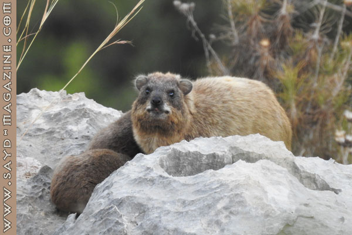
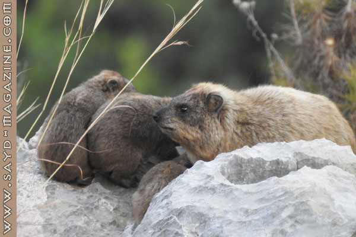
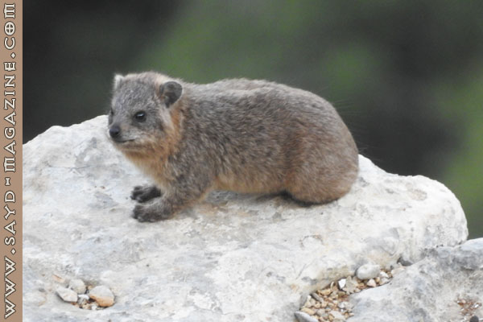

الطبسون يعُرف علميًا باسم Procavia capensis وهو حيوان خجول ذو طبيعة غامضة، يفضل الإختباء في الشقوق والجحور الصخرية بعيدًا عن البشر وهو من الثدييات الصغيرة ولا ينتمي إلى فصيلة القوارض بل فصيلة الظلفيات، وأقرب حيوان إليه هو الفيل من حيث التشريح وله نفس الرائحة تقريبًا، ويعتقد العلماء أن الطبسون والفيل هما أبناء عمومة قديمة انحدرًا من أصل واحد يرجع إلى 7 ملايين عام مضت.
يعيش الطبسون ضمن مجموعات يترأسها ذكر بالغ، وتلد أنثاه بعد فترة حمل بين ستة وسبعة أشهر، وتنجب ما بين اثنين إلى أربعة صغار، تبدأ عادة بتناول الطعام الصلب بعد أسبوعين من الولادة وتفطم بعد 10 أسابيع، وتصبح بالغة جنسيًا في فترة لا تتجاوز 16 شهرًا، وتعيش هذه الحيوانات حتى 10 سنوات.
هناك ثلاثة أنواع من الطبسون في العالم: طبسون الصخر Rock Hyraxes (موجود في لبنان) وطبسون الغابات Hetero Hyraxbrucei وطبسون الشجر Dendro Hyraxarboreus.
يحافظ الطبسون على التوازن البيئي، لأنه يقتات على أنواع معينة من النباتات، ويؤمن التوازن على مستوى الغطاء الأخضر، ويُساهم في تجديد الغابة، وعندما يقتات على أغصان الأشجار يكون كمن يقوم بتقليمها. يتعرض الطبسون في لبنان للصيد الجائر من قبل قواصين، لا ثقافة لهم سوى القتل والتعدي على الطبيعة وكائناتها، وهو من الحيوانات التي أصبحت مهددة بالانقراض في لبنان، وهناك جهود حثيثة لحمايته، ويوجد مجموعات منه تحظى بالحماية في محمية جبل موسى..
ونؤكد أن هناك مسوؤلية كبيرة على الصياد المسؤول المستدام في حماية الطبسون لأجل حماية الحياة البرية وتنوعها، والتي يعتبرها الصياد جزءًا لا يتجزء من حياته.
بعدسة أدونيس الخطيب

